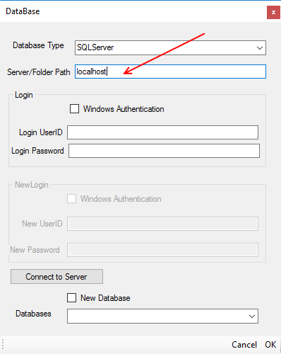

Mockup Data Generator
Basic WorkFlow
Table of Contents
1. Start WorkFlow2. Database Dialog
3. Enter Server
4. Database Login
5. Test Connection
6. Select Database
7. Database and Table List
8. Select Assemblies
9. Navigate to Assembly File
10. Select Assembly
11. Select Table
12. Select a Class
13. Columns & Attributes
14. Map Dialog
15. Save Map
16. Exit Map Dialog
17. Bring Up Thyme
18. Thyme
19. Find Table In Thyme
20. Build SQL
21. Test SQL
22. Exit Thyme
23. Save Map as a file
1. To start a project The Mockup Data Generator must connect to a database. Select one by either clicking on “Choose Database” in the menu bar or by “double” clicking on the Database tree node.
Database Dialog:
2. The database dialog appears as shown above to start. At the top of the window is a drop down where a database type is chosen.
Select a database type from the drop down selection.
3. Next enter the server where the database is on, as shown below:

4. Next choose what kind of login is needed for the database, the choices are:
5. Next test the connection to the database by clicking on the “Connect to Server” button. If successful the button turns green, as shown on the next diagram.
6. Next select the actual database you want to use to map.
7. Next click OK and the database information should appear in the left hand tree under the “Database” node and the tables should also appear in the “Database Tables” list, as shown below:
8. Next select the “Assemblies” node in the left hand tree view and “double click”, as shown below:
9. A open file dialog should appear, navigate to where the assembly file (exe or dll) resides.
10. Select assembly then click “Open”. The assembly name should appear under the “Assemblies” tree node on the left hand side and all the class names of the assembly should be listed on the far right hand under “Assembly Objects”, as shown below:

11. Now you are ready to map the database to the objects. First select a table from the list of tables, as shown below. (Actually you can select objects as well, order is not important.)

When the table is selected the Table view grid will display the columns of the table with descriptions.
12. Now select from the “Assembly Objects” a class. The “Object details” list on the far lower right should display either Fields, Properties or Methods depending on which radio button is selected.

13. Next Select all the columns you wish to map from the table view. Also select all attributes of a class you want to map to the table columns, as shown below:

14. Next select from the Map Data menu item one of the two: “Auto Map” or “Custom Mapping”, if the column names and the object attributes have identical names then you can use “Auto Map”.

If auto map was chosen the Map dialog will look something like what is described above. Data and Objects are shown and pre-mapping has taken place where the Mapped Pairs list displays the result.
15. Next click “Save Map” where if successful will turn green, as shown below:
16. Next click “OK”. The window should close and on the far left in the Tree view under “Mapped Objects” the object name should be displayed, as shown below:
17. Right click on the object node in the Tree view. Notice a context menu will appear. Hover “Data Query Window”, as shown below:

Three menu items will appear, select the appropriate attribute that has been mapped to the table columns.
- Data for Properties
- Data for Fields
- Data for Methods
Clicking anyone of the above selections results in a full screen window, as shown below:
18. Thyme has three main parts:
- A SQL editing area.
- A Table and Views panel
- A Store procedures panel
The panels slide out by hovering over them. In the Table and Views panel, all database tables and views are listed, as shown below:

19. Use the search bar to find the table you wish to have Thyme generate SQL for. You can chose as many tables as needed for the data, Thyme will generate the join SQL without the user having to select all the needed tables. The user just selects the tables with the fields they need. Pay careful attention to selecting tables and columns and insure the checkboxes are checked. When finished click in the SQL View area which will cause the panel to slide back. (Note: Database that fail to have strict referential integrity, in other words tables with fields that do point to primary keys to other tables but are not defined as a foreign key will cause problems resulting in Thyme not being able to form the join. This is a known issue and RADMonster will have a solution for those kinds of scenarios.)
20. Click on “Build SQL” in the main menu and Thyme will generate the SQL text.
21. Click on “Test SQL” and the data grid below will fill with data if the tables have data in them.
22. Select the “Files” menu item in the main menu and then click on “Exit with Query Results and SQL”. Thyme should close and you should be back in Mock Data Generator. The data and the SQL text has been stored with the mapped object.
23. Right click on the object under the “Mapped Objects” tree node and select “Save Object Map”, as shown above. A save file dialog should appear with the object name in the file name textbox. Note that all Mapped objects use the .ref extension to refer to editing data for the Mock Generator tool. The actual object maps and data are stored as a .all. Note that the user does not store the .all file directly, the tool automatically stores the all file when saving the .ref file.
This complete the basic workflow, simply repeat the steps as needed to each object map.
To use the maps in your code use the BuildObjects dll. The CreateObjects class many methods to choose from but they all simply take the .all file and the assembly of the class you wish to instantiate.